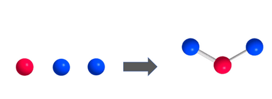
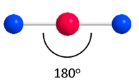
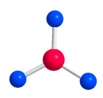
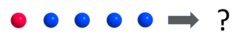
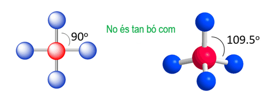
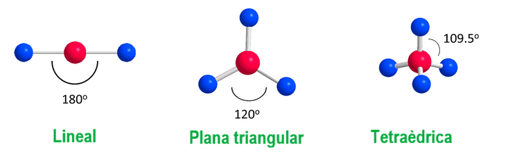
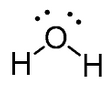
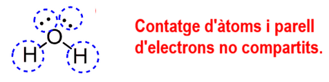
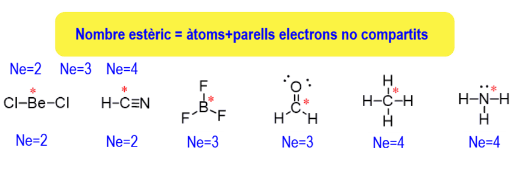
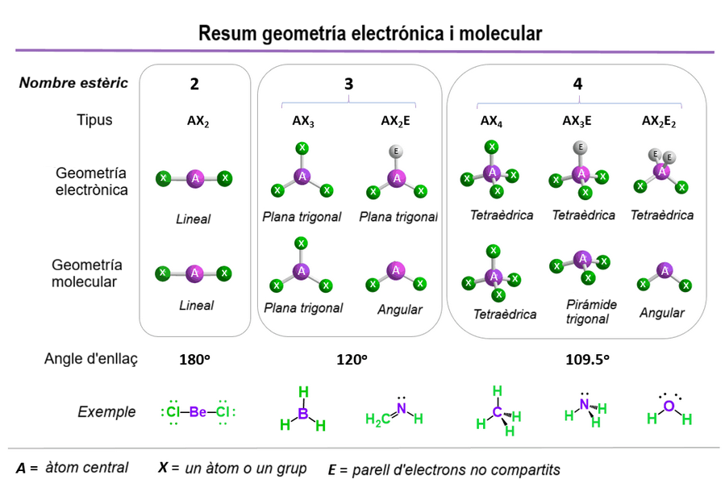

Text
La teoria de repulsió dels electrons de valència ( VSEPR, per a valence shell electron pair repultion) ens ajuda a entendre la geometria de les molècules.
Repulsió és la paraula clau i tot el que necessites per comprendre aquest concepte és tenir en compte la idea que els àtoms tenen tendència a romandre tan allunyats l'un de l'altre com sigui possible a causa de la repulsió entre els electrons en les seves capes de valència .
Suposem que tenim tres àtoms/esferes i els connectem tots. L'esfera vermella representa l'àtom central i els blaus estan connectats amb ell:

Tenint en compte que els àtoms blaus es repel·leixen entre si, proposen una geometria òptima per a ells. És el que es mostra més amunt el més òptim? És a dir, l'orientació els posa el més lluny possible?
La resposta és no perquè els àtoms blaus no estan a la major distància possible l'un de l'altre.
En aquest cas, posar-los a \(180^0\) permet aconseguir la geometria òptima:

Quan hi ha tres àtoms al voltant de la unitat central, l'angle òptim és de \(120^0\):

Ara bé, quin creus que és l'angle quan hi ha quatre àtoms connectats al centre?

Si mai has sentit parlar de la geometria tetraèdrica i vas pensar que era \(90^0\), no està gens malament, tots ho vam fer quan es va introduir per primera vegada en aquest tema. Tanmateix, la geometria tetraèdrica és una millor alineació, ja que l'angle entre els grups és de \(109.5^0\).

Cadascuna d'aquestes geometries que hem comentat té un nom:

Hi pot haver més de quatre àtoms, però, mai és el cas del carboni, i és per això que no arribarem a aquests casos ja que aquest tema està orientat a la química orgànica.
Nombre estèric
Ara, anem a fer una mica de terminologia. En la demostració del model anterior, vam dir que les esferes blaves representen els àtoms. No obstant això, en molècules reals, poden ser àtoms o parells solitaris d'electrons. Per exemple, en l'estructura de Lewis de l'aigua, podem veure que té dos àtoms i dos parells solitaris d'electrons.

En total, hi ha quatre unitats al voltant de l'oxigen a l'aigua:

La suma del nombre d'àtoms i parells solitaris s'anomena nombre estèric (SN):

És possible que tingueu una manera diferent per a trobar el nombre estèric, que implica el nombre d'enllaços. Tanmateix, si utilitzeu aquesta fórmula, no cal preocupar-se pels tipus d'enllaços. Tant si es tracta d'un enllaç senzill, doble o triple, són àtoms + parells no compartits per a qualsevol tipus d'enllaç.
Fixeu-vos que les dues últimes molècules tenen el mateix nombre estèric (4) però un nombre diferent d'àtoms i parells no compartits. És per això que hem d'identificar les geometries electròniques i geometries moleculars.
